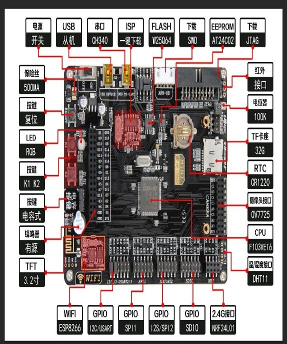
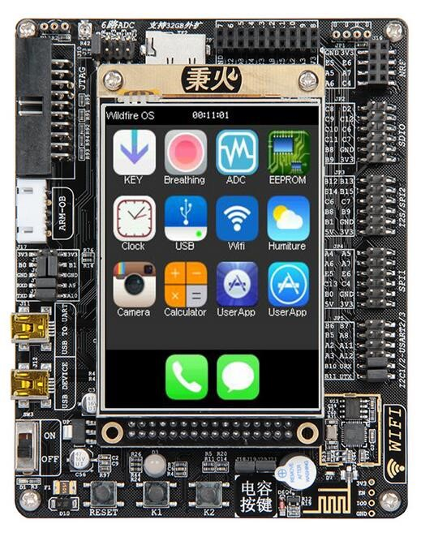

器材组
研究方向：
1.小型生物医学实验仪器制造与应用，2.生物医学图像处理与分析。
STM32系列开发板，我们具有两个型号：STM32f411re以及STM32f103指南者。
 
STM32系列开发板：
在STM32F105和STM32F107互连型系列微控制器之前，意法半导体已经推出STM32基本型系列、增强型系列、 USB基本型系列、互补型系列；新系列产品沿用增强型系列的72MHz处理频率。内存包括64KB到256KB闪存和 20KB到64KB嵌入式SRAM。新系列采用LQFP64、LQFP100和LFBGA100三种封装，不同的封装保持引脚排列一致性， 结合STM32平台的设计理念，开发人员通过选择产品可重新优化功能、存储器、性能和引脚数量，以最小的硬件变化 来满足个性化的应用需求。 简单的讲，可以将其看成一个微型的电脑主板，而需要实现各种功能，就需要自己去接外接设备以及写入代码。
树莓派及其显示屏：
Raspberry Pi(中文名为“树莓派”,简写为RPi，(或者RasPi/ RPI)是为学习计算机编程教育而设计)，只有信用卡 大小的微型电脑，其系统基于Linux。随着Windows 10 loT的发布，我们也将可以用上运行Windows的树莓派。自问 世以来，客群多计算机发烧友和创客的追捧，曾经一派难求。别看其外表“娇小”，“内心”却很强大，视频、音频等功能 通通皆有，可谓是“麻雀虽小，五脏俱全”。
简单的讲，理论上，我们可以通过树莓派，实现普通电脑的大部分功能。
目前，我们根据以上的器材可以开展的相关实验
STM32系列：
1. 制造恒温设备——即温湿度的探测与控制（已开展） 2. 还可以尝试做其他的电子设备，例如扫地机，平衡车等（未开展）
树莓派系列：
可以在树莓派上尝试各种功能，以此熟悉linux系统以及树莓派的应用。
新学期，新希望，现实验组诚挚招新，在未来的大学时光里，与我们一起，探索未知，攻克难关，携手共进，要求如下：
1.专业限生物技术与工程管理
2.年级22级、21级（当然，如果你已有相关经验，或者对于我们的课题内容很感兴趣，也可以报名参加面试）。